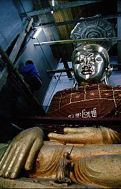

YadanaManAungPagoda/NyaungShwe
ヤダナマンアウンパゴダ
インレー湖観光基点の街ニャウンシュエにあるパゴダ。ま、田舎のひなびたパゴダである。
ここもまた大仏さんの改修中。これはこれで乾季にしか見られない素敵な風景。
私は結構好きである。

ただ、見逃せないのが中央の仏塔を囲むロの字状の建物。
大部分が物置と化しているのだが、その一画に変なジオラマがあった。

中央でカラスや犬に内蔵をつつかれている残虐シーン。でも周りに居る人達はいたって平然としている。
授乳中の御婦人、リラックス中の旦那。
 でも内蔵食いちぎられてる奴の顔がこれじゃあ、ねえ。
でも内蔵食いちぎられてる奴の顔がこれじゃあ、ねえ。
こんな人もいました。腹は減ってもお肌ツヤツヤ。
ヤンゴンに行きましょう
ミャンマーパゴダ列伝２のページへ
珍寺大道場 HOME